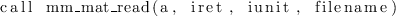

- Type:
- Asynchronous.
- On Entry
-
- filename
- The name of the file to be read.
Type:optional.
Specified as: a character variable containing a valid file name, or
-, in which case the default input unit 5 (i.e. standard input
in Unix jargon) is used. Default: -.
- iunit
- The Fortran file unit number.
Type:optional.
Specified as: an integer value. Only meaningful if filename is not -.
- On Return
-
- a
- the sparse matrix read from file.
Type:required.
Specified as: a structured data of type spdatapsb_Tspmat_type.
- iret
- Error code.
Type: required
An integer value; 0 means no error has been detected.